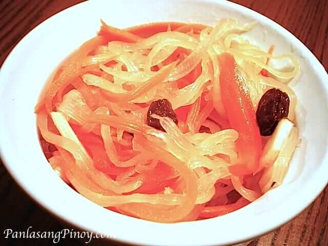

ATCHARA (PAPAYA)
Atchara
Atchara is an appetizer made from pickled green papaya. Julienned or grated green papaya are placed in airtight containers and soaked for a week in cooked vinegar and sugar mixture with onions, garlic, ginger, pepper corn, and red bell pepper.
This is probably the most famous appetizer in the Philippines because every region seems to have their own version. This sweet and sour tasting appetizer is usually served with fried dishes such as fried tapa, longganisa, tocino, and even lechon manok. In addition, this can also give life to dull dishes.
THE ATCHARA
Prep: 10minutes minutes Cook: 30minutes minutes Total: 40minutes minutes
Ingredients
- 3 to 4 lbs. green papaya julienned
- 2 medium sized carrots julienned
- 1 large onion thinly sliced lengthwise
- 10 cloves garlic thinly sliced
- 2 tbsp whole peppercorn
- 1 large red bell pepper cut into strips
- 1 knob ginger cut into thin strips
- 1/4 cup salt to dehydrate papaya
- 1 1/2 tsp salt for the brine or syrup
- 2 cups white vinegar
- 1 1/3 cups granulated sugar
- 2 small boxes raisins
Instructions
- Place the julienned papaya in a large bowl and combine 1/4 cup salt then mix until the salt is well distributed.
- Cover the bowl and place inside the refrigerator overnight (the salt will dehydrate the papaya).
- Place the julienned papaya in a colander or strainer then rinse with running water.
- Using cheesecloth (or any cloth) as a container, put the rinsed papaya inside the cloth and squeeze until all the liquid comes out.
- Put the papaya back in the large bowl and combine with carrots, garlic, ginger, onions, whole peppercorn, bell pepper, and raisins
- Heat the saucepan and pour-in the vinegar and bring to a boil.
- Add the sugar and 1 1/2 tsp salt then stir until well diluted
- Turn off the heat and allow the syrup to cool down until temperature is low enough to handle.
- Place the combined vegetables and spices in a sterilized airtight jar and pour-in the syrup
- Seal the jar and place inside the refrigerator for a week (or 5 days minimum to achieve the expected texture and flavor).
- Serve cold with fried dishes. Share and Enjoy!